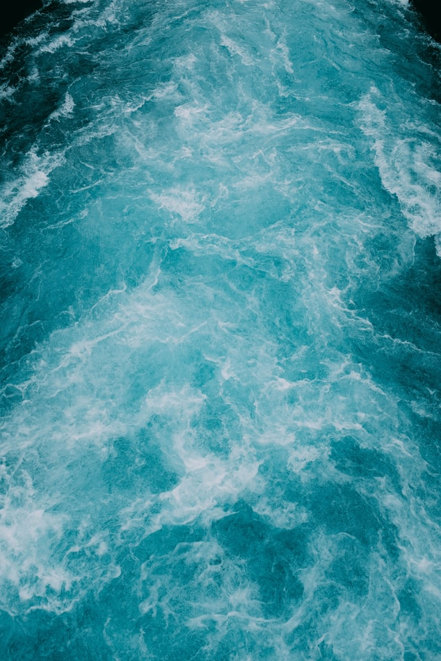
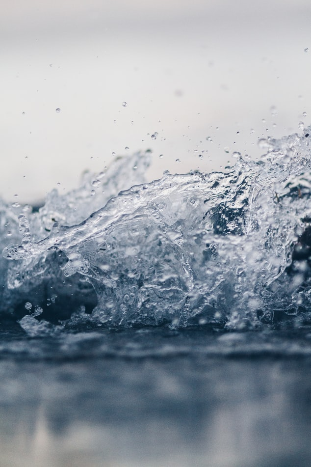

Welcome to Droplet!
🌊
We are a company that is dedicated to providing you with the best bio-home friendly products while also giving back to the planet.
Water Sense
It performs as well or better than their less efficient counterparts.
They are 20 percent more water efficient than average products in that category.
Realize water savings on a national level.
Provide measurable water savings results.
Achieve water efficiency through several technology options.

Support Organizations
Pacific Institute: A leader in producing research and informational resources about water conservation. They provide frequent reports on water conservation issues around the world including sustainability, water conflicts, and water use for agriculture and energy. Every two years they publish a comprehensive report providing data and analysis about the world’s freshwater resources.
Clean Water Action: For 40 years, Clean Water Action has promoted legislation to protect water resources in the United States including the Clean Water Act and the Safe Drinking Water Act. They continue to work to close legal loopholes to prevent the pollution of freshwater resources.
Charity-Water: They tackle the problem of clean water shortages by raising money for clean water projects. It finds organizations providing long-lasting water services and funds their projects to provide clean water. What sets it apart is that 100% of public donations fund water projects and GPS coordinates are provided so completed projects can be viewed on Google Maps.
